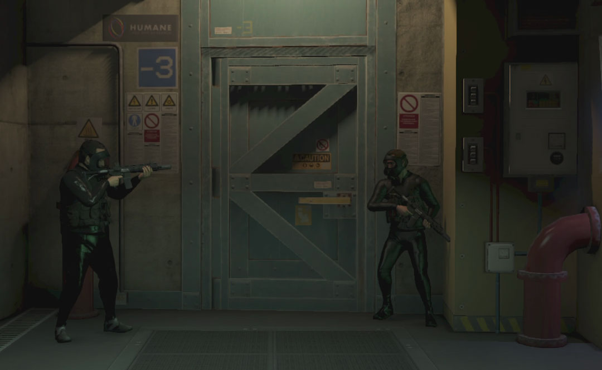
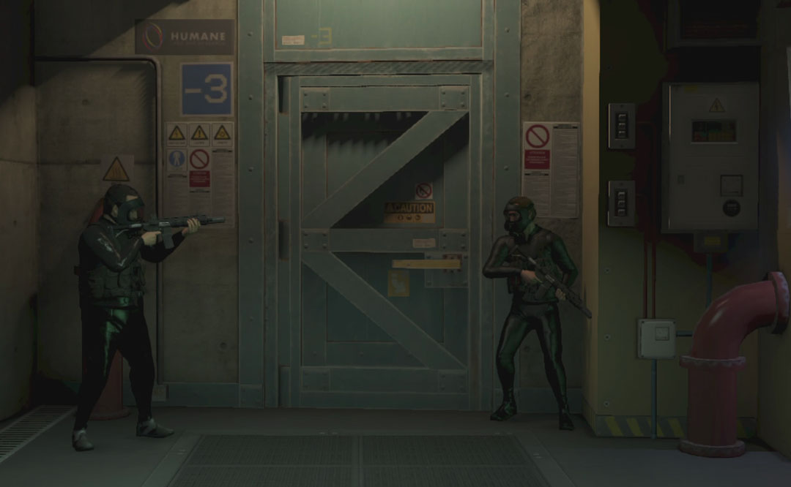
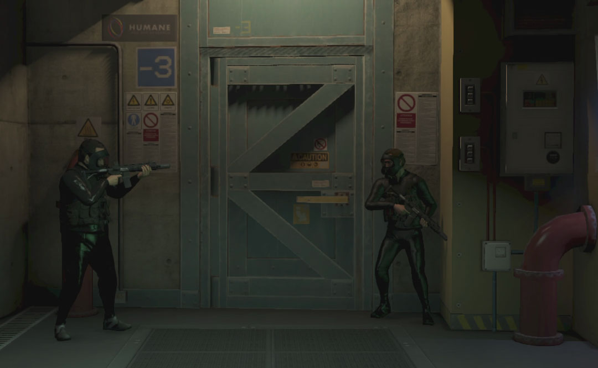

Below is a scrollable gallery of my some of my favorite photos taken during the project.

After organizing my photos, I found several tropes that fit into the "exaggerated and extreme" mentioned in my thesis statement. I compared many of the tropes with their real life or pop-culture counterparts, and also connected the tropes with each other. I then used that information to create the below zoomable "Conspiracy Corkboard."